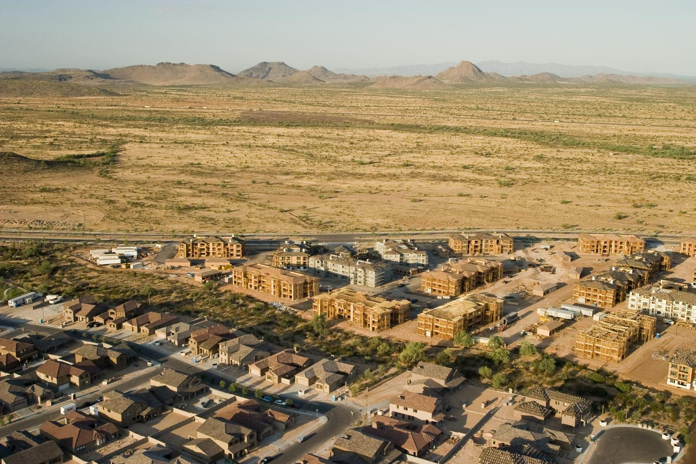

Mapping a biogeochemical cycle
Describe one cycle, map how it moves through an ecosystem, and show where people change it.
All the key terms for Module 4
Mapping a Biogeochemical Cycle
- Duration
- 30–45 minutes
- Group size
- Up to 5 students
- Present
- Be ready to share your visual with the class
- Tools
- The Cycle Systems Builder on the last slide of this deck
Objective. Describe a major biogeochemical cycle and analyze its interactions with human activities to evaluate its role in supporting Earth's life-supporting systems. Final deliverable: a single, cohesive visual illustration divided into three clear sections: Title, Diagram, and Summary.
Your team's cycle: Team 1 · Nitrogen·Team 2 · Phosphorus·Team 3 · Carbon·Team 4 · Water·Team 5 · Oxygen·Team 6 · Sulfur (example)
Context: ground your diagram in a specific geographic context. You may base it on the local Sonoran Desert (Phoenix area), or select a comparable ecosystem (e.g., tropical forest, temperate forest, savanna) if it provides a more compelling case for your cycle.
1.Top Section: Title
A clear, descriptive title that names your cycle and your chosen ecosystem.
e.g., "The Nitrogen Cycle in the Sonoran Desert"
2.Middle Section: The Main Illustration
Map the complete cycle by explicitly annotating the pools, inflows, and outflows. Use boxes or circles for stocks, labeled arrows for flows, and icons or clipart to highlight human touchpoints.
Key components (stocks / pools): the main reservoirs where the element resides (e.g., atmosphere, soil organic matter, vegetation, microbes, water bodies).
Key processes (flows): the essential biological, chemical, or physical processes that move the element between pools (e.g., photosynthesis, nitrogen fixation, nitrification, decomposition, erosion, evaporation).
Human impacts: integrate 2–3 human-caused disruptions to the natural cycle. A Nitrogen team might illustrate fertilizer runoff, fossil fuel combustion, or soil crust degradation; a Carbon team might focus on vehicle emissions, deforestation, or urban concrete replacing biomass storage.
3.Bottom Section: Summary & Identity
Synthesis statement: a brief, original summary analyzing the cycle's unique dynamics within your chosen ecosystem.
"In the arid Phoenix desert, natural nitrogen cycling is highly limited by moisture, making biological soil crusts crucial for nitrogen fixation; however, urban fossil fuel combustion heavily artificially amplifies local deposition…"
Team names: the full names of all participating group members.
Collaboration: work actively with your teammates to draw and populate your diagram. Individual submission: take a high-resolution screenshot or export your final work as an image or PDF. Every student must upload their own copy to Canvas to receive credit. Academic integrity: contribution must be equitable; if a team member does not take part, leave their name off the graphic and notify the professor.
What a finished diagram looks like
The Sulfur Cycle in a Temperate Forest
Synthesis statement
Human impacts (red dashed arrows)
Before you upload
Selected piece
Click a stock or an arrow to name it. Press Delete to remove it.